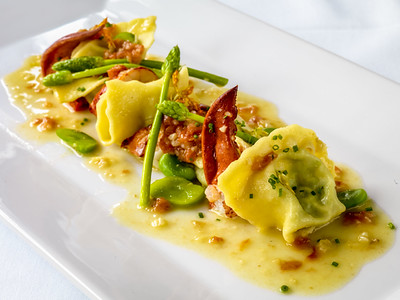

Recipe Page
Lobster Ravioli

Description
The lobster is simply enriched with mascarpone, aromatics, and fresh herbs, so the sweet lobster meat shines through in the finished ravioli. If you want to jazz it up, add some cayenne pepper, Parmesan, or saffron.
Ingredients
- 1 ½ cups all-purpose flour, plus more for dusting
- 2 large eggs
- 1 teaspoon kosher salt, divided
- 3/4 cup mascarpone cheese
- 6 tablespoons cold unsalted butter, divided
- 3 cloves garlic, finely chopped
- 1 large shallot, finely chopped
- 1 tablespoon finely chopped fresh chives
- 1 tablespoon finely chopped fresh tarragon leaves
- 1 tablespoon fresh lemon juice
- 2 teaspoons grated lemon zest
- 1/4 teaspoon ground black pepper
- 8 ounces cooked lobster meat, cut into bite-sized pieces
- 3/4 cup bottled clam juice
- 1/2 cup dry white wine
- 3/4 cup heavy whipping cream
- 1 cup cherry tomatoes, halved
- fresh herbs for garnish
Steps
- Place flour in a large bowl and create a well in the center. Add eggs and 1/4 teaspoon salt to well; beat using a fork to break up egg mixture. Slowly begin to incorporate flour into egg mixture, stirring from the center and gradually working outwards until shaggy pieces of dough begin to form. Use your hands to bring shaggy dough pieces together to form a shaggy ball. Transfer shaggy ball and any remaining flour in bowl to a clean work surface. Knead, pressing any loose flour into dough, until dough is smooth and elastic, 10 to 12 minutes.
- Wrap dough tightly in plastic wrap; let rest at room temperature at least 1 hour or up to 2 hours, or in a refrigerator up to 1 day. (If refrigerating, let come to room temperature before rolling.)
- Place mascarpone in a small bowl; set aside. Melt 2 tablespoons butter in a medium skillet over medium heat. Add garlic and shallot; cook, stirring often, until softened, about 2 minutes. Stir shallot mixture into mascarpone in bowl along with herbs, lemon zest and juice, pepper, and remaining salt until combined. Gently stir in lobster. Chill, covered, for 15 minutes.
- While lobster filling chills, unwrap dough, and divide evenly into 2 portions. Place 1 dough portion on a clean work surface; wrap remaining dough portion in plastic wrap. Shape dough into a rectangle; press dough to flatten using heel of hand. Starting with the widest setting, pass dough through pasta machine 2 times. Fold the outer tapered ends of pasta sheet in toward the center like an envelope, so that the width of the pasta sheet is similar to the width of the pasta roller. Pass pasta sheet through widest setting 1 more time. Continue rolling pasta through machine, reducing roller width 1 notch at a time, until sheet is about 1/16-inch thick and you can see the outline of your hand through the sheet. Cut sheet in half crosswise to make them easier to work with. Cover 1 sheet loosely with plastic wrap. Lightly dust work surface with flour and place remaining dough sheet on surface.